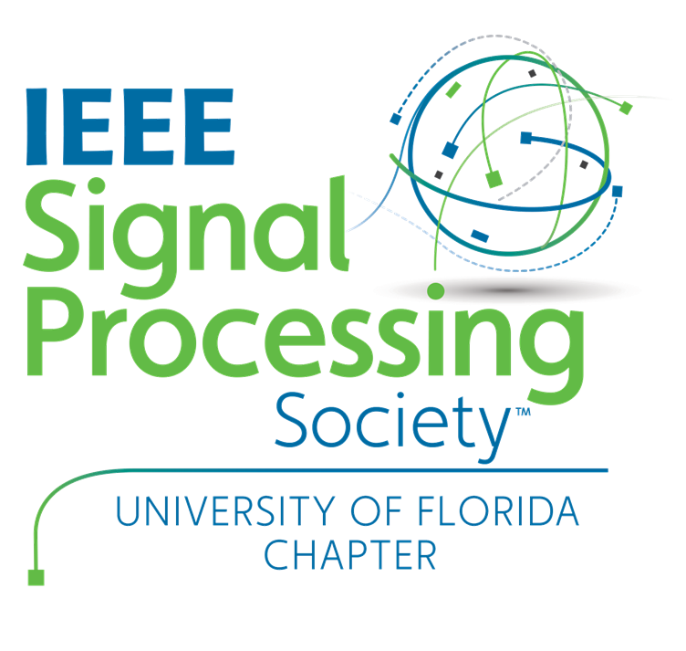
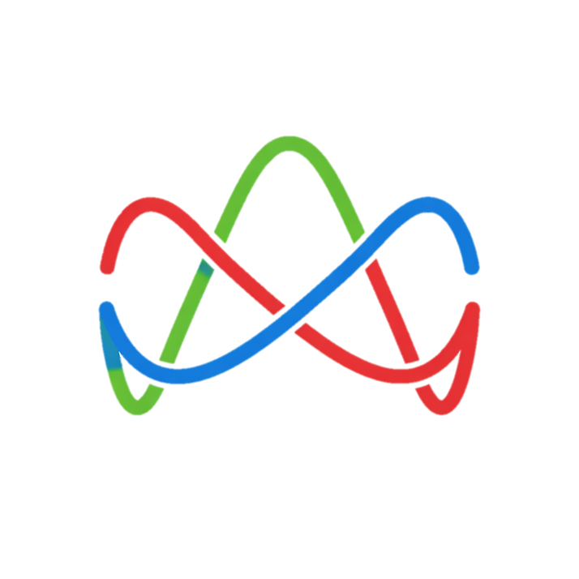
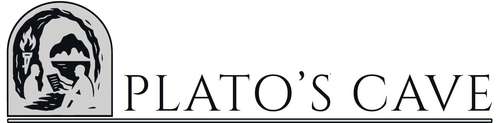

Who we are
IEEE SPS @ UF exists to make signal processing easier to enter and more exciting to practice. The chapter bridges coursework, research, and public technical community with programming that is serious about content and generous about access.
Members can expect hands-on workshops, project-facing work, and communication channels that keep new members connected between events.
The aim is not only to host events. It is to build an environment where students can learn fast, ask better questions, and move into meaningful technical work.



Executive Board
Connected Organizations
Join the community channels and track the next event.
You do not need to arrive with the full background already in place. Start with the chapter spaces and show up.